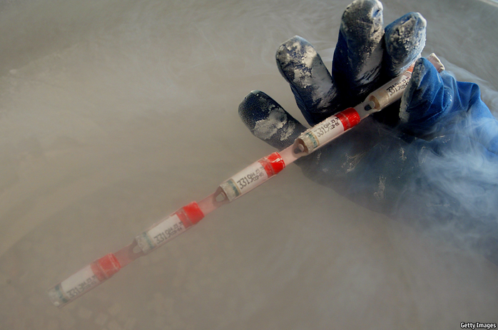

2021-03-29T14:01:19+00:00
The sperm and egg business
精卵生意
精卵生意
Swimming freestyle
自由泳
自由泳
America’s love of free markets extends to its fertility clinics
美国对自由市场的热爱延伸到生育诊所
美國對自由市場的熱愛延伸到生育診所
EVERY TIME one of America’s genetic-testing companies advertises a deal on DNA kits, Michael (not his real name) braces himself for what may follow: a message from one of his hitherto unknown offspring. Three decades ago, as a student at the University of Houston, Michael became a sperm donor; the clinic would “pull me out of retirement”, he says, every time a customer wanted to expand their family. So far, the 55-year-old knows of around 60 children (and a dozen grandchildren) he has sired in addition to the four teenagers he shares with his wife; he suspects the true number is closer to 100.
每一次有哪家美国的基因检测公司促销DNA试剂盒，迈克尔（化名）都会为接下来可能发生的事做好心理准备：某个他尚未相认的子女将发来消息。30年前，还在休斯敦大学就读的迈克尔捐过精子。他说，每当有顾客想要家里添人进口，这家诊所就会“把我请出山”。据现年55岁的他所知，除了与妻子生育的四个十来岁的孩子外，他还有约60名子女（以及十几个孙子孙女），他怀疑真实数字接近100。
每一次有哪家美國的基因檢測公司促銷DNA試劑盒，邁克爾（化名）都會為接下來可能發生的事做好心理準備：某個他尚未相認的子女將發來消息。30年前，還在休斯敦大學就讀的邁克爾捐過精子。他說，每當有顧客想要家裡添人進口，這家診所就會“把我請出山”。據現年55歲的他所知，除了與妻子生育的四個十來歲的孩子外，他還有約60名子女（以及十幾個孫子孫女），他懷疑真實數字接近100。
“I could write a book,” he says, about the lifelong consequences of what had seemed, at the time, like an easy buck and an incentive to live healthily (he steered clear of heavy drinking and drugs to preserve his sperm's motility). Several children contact him regularly. He has been surprised by how many had been led to believe the father who brought them up was their biological parent: “Sometimes they’re very angry they’ve been lied to all their lives”. He is aware of some offspring who know his identity but have not made contact, and of a Facebook group he is not part of “so they can compare notes”. He gets a lot of cards on Father’s Day.
关于这延续终生的后果，“我可以写一本书了。”他说。当时他捐精只想着能轻松赚点钱，还可以激励自己坚持健康的生活方式（为保持精子的活力，他不酗酒也不吸毒）。有几名子女一直与他保持联系。他惊讶地发现，他们当中有很多人都受了误导，以为养父就是生父，“有时他们非常愤怒自己竟被骗到现在。”他知道有些子女虽知道他的身份，但至今没联系过。他也知道有一个Facebook群组（他没进群），“他们可以在那里交流想法”。每年父亲节他都会收到很多贺卡。
關於這延續終生的後果，“我可以寫一本書了。”他說。當時他捐精只想着能輕鬆賺點錢，還可以激勵自己堅持健康的生活方式（為保持精子的活力，他不酗酒也不吸毒）。有幾名子女一直與他保持聯繫。他驚訝地發現，他們當中有很多人都受了誤導，以為養父就是生父，“有時他們非常憤怒自己竟被騙到現在。”他知道有些子女雖知道他的身份，但至今沒聯繫過。他也知道有一個Facebook群組（他沒進群），“他們可以在那裡交流想法”。每年父親節他都會收到很多賀卡。
An ever-increasing number of men (and women who donate eggs) will have similar experiences. Because America’s sperm- and egg-donor industry is largely unregulated, no one knows how many children have been conceived this way. But social changes mean the industry is going through a period of extraordinary and unprecedented growth. Most of the children Michael fathered were born within heterosexual marriages. Today such couples constitute a minority of clinics’ customers, in part because advances in reproductive medicine mean more couples with fertility problems are able to conceive. But there are two bigger reasons for the change: the legalisation of gay marriage and the rising number of single women who are choosing to become mothers. The majority of sperm banks’ customers today are gay couples and women without partners.
越来越多男性（以及捐卵的女性）将会有类似的经历。由于美国的精子卵子捐献行业很大程度上不受监管，没人知道有多少孩子是通过这种方式受孕出生的。但社会变迁意味着这个行业正经历一段前所未有的非凡增长期。迈克尔捐精所生的大多数子女都是在异性夫妇家庭里出生的。今天，这样的夫妇在生育诊所的客户中只是少数，原因之一是生殖医学的进步使得更多不孕不育夫妇最终能够怀孕生产了。但还有两个更大的原因：同性婚姻合法化和越来越多单身女性选择成为母亲。如今精子库的大部分客户是同性夫妇和单身女性。
越來越多男性（以及捐卵的女性）將會有類似的經歷。由於美國的精子卵子捐獻行業很大程度上不受監管，沒人知道有多少孩子是通過這種方式受孕出生的。但社會變遷意味着這個行業正經歷一段前所未有的非凡增長期。邁克爾捐精所生的大多數子女都是在異性夫婦家庭里出生的。今天，這樣的夫婦在生育診所的客戶中只是少數，原因之一是生殖醫學的進步使得更多不孕不育夫婦最終能夠懷孕生產了。但還有兩個更大的原因：同性婚姻合法化和越來越多單身女性選擇成為母親。如今精子庫的大部分客戶是同性夫婦和單身女性。
Rosanna Hertz of Wellesley College, the author of “Random Families”, says the market is booming as gay Americans reach marrying age and elective single motherhood becomes more widespread. Partly because conceiving using donor sperm is a lot more straightforward and affordable than doing so using donor eggs, children born through sperm donors are likely to outnumber those from egg donors.
《随机家庭》（Random Families）一书的作者、韦尔斯利学院（Wellesley College）的罗珊娜·赫兹（Rosanna Hertz）表示，随着美国同性恋者达到适婚年龄，加上女性自愿成为单亲母亲的情况变得更普遍，辅助生育市场蒸蒸日上。一定程度上因为捐精受孕要比捐卵受孕简单和便宜得多，捐精出生的孩子数量很可能会超过捐卵出生的。
《隨機家庭》（Random Families）一書的作者、韋爾斯利學院（Wellesley College）的羅珊娜·赫茲（Rosanna Hertz）表示，隨着美國同性戀者達到適婚年齡，加上女性自願成為單親母親的情況變得更普遍，輔助生育市場蒸蒸日上。一定程度上因為捐精受孕要比捐卵受孕簡單和便宜得多，捐精出生的孩子數量很可能會超過捐卵出生的。
Surging demand and an absence of government regulation have created a field that has developed “more like a business than medicine”, says Dov Fox of the University of San Diego, the author of “Birth Rights and Wrongs”. The line is often blurred. Regulating baby-making can raise difficult ethical questions about who should be parents and who should be born. But some elementary regulations are overdue, not least because clinics are already making such decisions: requiring, for example, that sperm donors should be a certain height and educated to college level.
《出生的是与非》（Birth Rights and Wrongs）的作者、圣地亚哥大学的多夫·福克斯（Dov Fox）说，需求激增和政府监管缺位让这个领域的发展“更像一门生意，而非医学”。其中的界限往往模糊。对辅助生殖的监管会引发棘手的伦理问题，即谁有资格成为父母以及谁有资格出生。但一些基本监管是早就该做了，尤其是因为诊所已经在自行做出相关决定：比如要求精子捐赠者应达到一定的身高，具备大学以上学历。
《出生的是與非》（Birth Rights and Wrongs）的作者、聖地亞哥大學的多夫·福克斯（Dov Fox）說，需求激增和政府監管缺位讓這個領域的發展“更像一門生意，而非醫學”。其中的界限往往模糊。對輔助生殖的監管會引發棘手的倫理問題，即誰有資格成為父母以及誰有資格出生。但一些基本監管是早就該做了，尤其是因為診所已經在自行做出相關決定：比如要求精子捐贈者應達到一定的身高，具備大學以上學歷。
Gametes gate
配子门
配子門
The most obvious gap is a legal limit on the number of children a sperm-clinic donor, however tall and brilliant he may be, can help create. America is one of the few countries to have no such cap (Britain, by comparison, has a limit of ten donor-created families per donor). Many clinics have their own limits. Jaime Shamonki of Generate Life Sciences, which operates California Cryobank, America’s biggest sperm bank, says although people worry that large groups of half-siblings could lead to incest, a bigger concern is that a donor with an undiagnosed hereditary health condition may spread it widely.
最突出的监管缺口是对一个捐精者的造人数量设定法律上限，无论他多高大多聪明。美国是少数几个没有这类上限的国家之一（相比之下，在英国，每位捐精者最多能向十个家庭捐献）。许多诊所都自设了上限。美国最大的精子库是加州精子银行（California Cryobank），其运营公司制造生命科学（Generate Life Sciences）的海梅·沙蒙基（Jaime Shamonki）说，虽然人们担心大量同父异母的兄弟姐妹会导致近亲通婚，但更大的风险是捐精者未被诊断出的遗传性健康问题可能会广泛传播。
最突出的監管缺口是對一個捐精者的造人數量設定法律上限，無論他多高大多聰明。美國是少數幾個沒有這類上限的國家之一（相比之下，在英國，每位捐精者最多能向十個家庭捐獻）。許多診所都自設了上限。美國最大的精子庫是加州精子銀行（California Cryobank），其運營公司製造生命科學（Generate Life Sciences）的海梅·沙蒙基（Jaime Shamonki）說，雖然人們擔心大量同父異母的兄弟姐妹會導致近親通婚，但更大的風險是捐精者未被診斷出的遺傳性健康問題可能會廣泛傳播。
But without a law, even self-imposed limits are routinely flouted. Alan (not his real name) reckons he fathered “hundreds” of children as a result of the four years he donated sperm to a clinic three times a week. Because he had a high sperm count, most of his donations were divided into 15 to 20 vials (one is used per insemination effort) and they tended to sell out. The clinic, he says, never mentioned a limit on the number of children he would beget, though he is not complaining; in his most lucrative year he made $50,000.
但在没有法律的情况下，就算诊所自行设定了限制，也常形同虚设。艾伦（化名）曾在四年里每周三次向一家诊所捐献精子，据他估计，自己是“几百个”孩子的生父。因为他的精子量多，大多数捐赠都被分装至15到20个小瓶内（每次授精用一瓶），而且它们一般全都能卖出去。他说，诊所从没提过有造人数量的限制，不过他也没什么怨言——收成最好的那一年他赚了五万美元。
但在沒有法律的情況下，就算診所自行設定了限制，也常形同虛設。艾倫（化名）曾在四年里每周三次向一家診所捐獻精子，據他估計，自己是“幾百個”孩子的生父。因為他的精子量多，大多數捐贈都被分裝至15到20個小瓶內（每次授精用一瓶），而且它們一般全都能賣出去。他說，診所從沒提過有造人數量的限制，不過他也沒什麼怨言——收成最好的那一年他賺了五萬美元。
Beside health concerns, there is another important reason for limiting a donor’s fecundity. The children of sperm and egg donors, like those who are adopted, often want to trace their blood relations. But it is difficult to forge strong relationships when vast numbers of children are involved. Wendy Kramer of the Donor Sibling Registry, which helps connect members of donor families, says this is an example of how the contract between clinics and would-be parents has ignored the interests of the children it produces. She established the group in 2000 after her then ten-year-old son, conceived using donor sperm, had become curious about his wider family. Last month he learned of the existence of two new half-siblings, bringing the tally to 22. Ms Kramer had been told her sperm donor would father no more than ten children, a limit she considers sensible.
除了健康问题，对捐精捐卵的使用设限还有一个重要原因。和被收养的孩子一样，捐精捐卵生子女往往也想追溯自己的血缘关系。但如果牵涉的孩子数量庞大，就不容易结成紧密关系。捐赠者子女登记系统（Donor Sibling Registry）帮助捐赠者家庭成员建立联系，该组织的温迪·克雷默（Wendy Kramer）说，这是诊所和想受孕的父母之间的合同忽视了孩子利益的一个例子。她在2000年创建了该系统，因为她当时十岁的儿子（通过捐精受孕出生）开始对自己背后的大家庭感到好奇。上个月，他得知自己又多了两个同父异母的手足，现在已有22个兄弟姐妹。诊所曾告诉克雷默说她的精子捐赠者造人数量不会超过十个，她认为这个上限是合理的。
除了健康問題，對捐精捐卵的使用設限還有一個重要原因。和被收養的孩子一樣，捐精捐卵生子女往往也想追溯自己的血緣關係。但如果牽涉的孩子數量龐大，就不容易結成緊密關係。捐贈者子女登記系統（Donor Sibling Registry）幫助捐贈者家庭成員建立聯繫，該組織的溫迪·克雷默（Wendy Kramer）說，這是診所和想受孕的父母之間的合同忽視了孩子利益的一個例子。她在2000年創建了該系統，因為她當時十歲的兒子（通過捐精受孕出生）開始對自己背後的大家庭感到好奇。上個月，他得知自己又多了兩個同父異母的手足，現在已有22個兄弟姐妹。診所曾告訴克雷默說她的精子捐贈者造人數量不會超過十個，她認為這個上限是合理的。
Related to this is the issue of anonymity. Most sperm clinics in America offer donors the option of remaining anonymous until a child is 18, or for ever. But because donor-conceived children, like adopted ones, fare better psychologically when told of their origins from babyhood and allowed to trace their relatives if they wish to, there is a push to prohibit anonymity. It is, in any case, a false promise, thanks to DNA testing. There would be a cost: when anonymity is banned the number of donors falls. Other countries have decided that is a price worth paying for children’s well-being. Anonymity (and the fact that donors can be paid) is one of the reasons America has become an exporter of sperm.
与之相关的问题是匿名。美国大多数精子诊所都允许捐精者选择在孩子18岁之前保持匿名或永久匿名。但是，和被领养的孩子一样，通过捐精孕育的孩子如果从小就了解自己的出身并可以按自己的意愿追溯亲缘关系，他们的心理会更健康，所以有人呼吁禁止匿名捐赠。不论如何，有了DNA测试，匿名捐赠不过是个空头承诺。而禁止匿名是有代价的：捐赠者人数会下降。已有一些国家决定，为了儿童的福祉，这样的代价值得。美国已成为一个精子出口国，匿名（以及有偿捐精）是原因之一。
與之相關的問題是匿名。美國大多數精子診所都允許捐精者選擇在孩子18歲之前保持匿名或永久匿名。但是，和被領養的孩子一樣，通過捐精孕育的孩子如果從小就了解自己的出身並可以按自己的意願追溯親緣關係，他們的心理會更健康，所以有人呼籲禁止匿名捐贈。不論如何，有了DNA測試，匿名捐贈不過是個空頭承諾。而禁止匿名是有代價的：捐贈者人數會下降。已有一些國家決定，為了兒童的福祉，這樣的代價值得。美國已成為一個精子出口國，匿名（以及有償捐精）是原因之一。
Many observers would also like a law requiring clinics to do more comprehensive screening for health conditions. In 2014 a once-popular donor who had fathered innumerable children in several states and at least two other countries was found to have lied about being a polyglot neuroscientist with an IQ of 160 and perfect health. He was, rather, a university drop-out with a criminal record and several health disorders. The case has sparked multiple lawsuits against the clinic in Georgia that had marketed and sold his sperm without checking his medical records or conducting a criminal check. Several were dismissed on the ground that the clinic was not breaking the law.■
许多观察人士也希望政府制定法律要求诊所做更全面的健康筛查。2014年，一个曾在美国多个州和至少两个其他国家捐精孕育了众多子女的男子的谎言被识破，他自称神经科学家、通晓多国语言、智商160且非常健康。而实际上他大学辍学，有犯罪前科，患有多种疾病。这引发了对他向之捐精的佐治亚州的生育诊所的多起诉讼，这家诊所在没有事先查核他的病历和犯罪记录的情况下就兜售了他的精子。其中几起诉讼被驳回，理由是该诊所并没有违法。
許多觀察人士也希望政府制定法律要求診所做更全面的健康篩查。2014年，一個曾在美國多個州和至少兩個其他國家捐精孕育了眾多子女的男子的謊言被識破，他自稱神經科學家、通曉多國語言、智商160且非常健康。而實際上他大學輟學，有犯罪前科，患有多種疾病。這引發了對他向之捐精的佐治亞州的生育診所的多起訴訟，這家診所在沒有事先查核他的病歷和犯罪記錄的情況下就兜售了他的精子。其中幾起訴訟被駁回，理由是該診所並沒有違法。